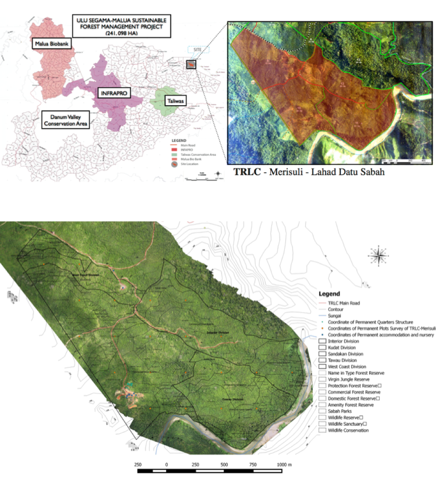

TRLC- Banun, Perak
/Tropical Rainforest Living Collection/
Raising thousands of seedlings requires the careful
maintenance and care for them over many years. Here
members of the G-team Perak are weeding seedlings in
TRLC Banun.
Many tropical plant species in Malaysia face an elevated risk of extinction due to logging,
forest fragmentation and land use change. Malaysia’s Plant Red List for the Peninsular
Malaysian Dipterocarps states that over half of the dipterocarp species have a threatened
category nationwide i.e. they are Critically Endangered, Endangered and Vulnerable.
TRCRC has established conservation sites, known as Tropical Rainforest Living Collections
(TRLCs), to safeguard these tropical plant species. At TRLCs, seeds from threatened plants
are collected, germinated and planted on our established sites to produce seeds and
planting material for restoration projects.
Established through collaboration with Sabah Forestry Department, this site covers an area of 224 hectares located within the Ulu Segama-Malua Sustainable Forest Management Project.
TRLC - Merisuli was established in 2012 and comprises of 224 hectares of secondary forest.
At this site, the collection of seeds outside protected areas will be prioritised with the aim
of safeguarding threatened species. These seedlings are used to restore and rehabilitate
forests in the project area.
As part of the Ulu Segama-Malua Sustainable Forest Management Project, this site is
certified under the Forest Stewardship Council (FSC) and is committed to comply with
FSC Principles and Criteria.
With support from Sabah Forestry Department, TRCRC has created a 10-Year Forest
Management Plan for this project site, which includes actionable measures to ensure the
long-term sustainability of this project. Future endeavours include an education centre and
a regular volunteering program.


Key People

This 500-hectare site is located within the Amanjaya Forest Reserve and is supported by Perak Forestry Department.
Proposed plan for TRLC (Tropical Rainforest Living Collection) Banun, Perak - 500 ha
TRLC – Banun, established in 2013, is a 500-hectare site located in Gerik, Perak and is part
of the Amanjaya Forest Reserve. This site is divided by the Gerik-Jeli highway and the
primary focus of this site is to hold an in-situ collection of rare and endangered trees which
are restricted to Peninsular Malaysia. The site will secondarily work to advance Malaysia’s
Central Forest Spine initiative, which aims to reconnect fragmented forests across
Peninsular Malaysia. By securing connectivity between forest fragments, a route for
wildlife crossings will be provided.
TRCRC operates TRLC - Banun with support from Perak Forestry Department over a
60-year lease agreement of the 500-hectare project site area.

TRLC Banun. Suhaili and the G-Team taking a breather after a full day's work of clearing invasive plant species to prepare the site for tree planting in Batu Gangan, Pahang.
Key People

© TRCRC 2019